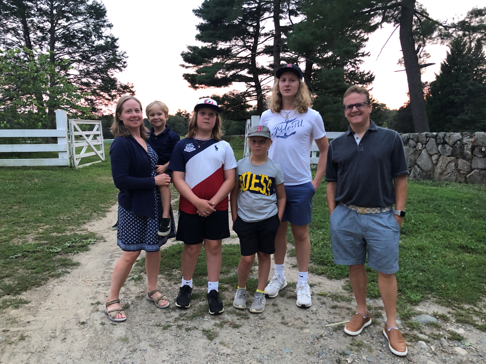

Meet Massachusetts Homeschoolers: The Rubin Family
By Robin Rubin
The first time I heard anyone mention homeschooling was when I was pregnant with my first child, back in 2003. During a pre-natal exercise class, one of the mothers mentioned that her family was going to be attending a homeschooling conference soon (her older child was around 5 years old). Intrigued, I asked her why they were homeschooling. She said because they did not want to rush childhood. I thought that was interesting, and it turned out to be a comment I would never forget.
Once my first son, Simon, was born we started practicing attachment parenting. He was a high needs baby so my husband and I held him for every single nap until he was close to two years old. This gave us plenty of time to read parenting books and figure out how we wanted to raise our son. Many of these books explored the topic of alternative education, including homeschooling. Since I did not have great memories about my own public education, I really liked the sound of alternative education, including homeschooling.
Three days after Simon turned three, his brother Satchel was born. Although all Simon’s friends were now planning to go to preschool, I did not want to have to worry about that with a newborn, nor did I want Simon to feel that he was being pushed away because there was a new baby in the house. So we kept him home and spent that year going to the library story hour as well as various parent-child classes.
When Simon was four we decided to send him to nursery school at the Waldorf School two mornings a week. I thought it would be fun for him to have some play time away from home while I took care of the baby. We also took classes at Mass Audubon’s Ipswich River Wildlife Sanctuary. It was there that I saw how much he was learning and thriving being outside. As he would be turning five that summer, we had to make a decision as to whether or not we would keep him at Waldorf, send him to the public school, or homeschool. I missed him when he was at nursery school two mornings a week (and I have to admit, rushing out the door so early in the morning was not really our thing). I could not imagine having him leave every day, and be gone all day. We were having so much fun, and he was learning so much by what we were already doing. I did not see the point in giving all that up. I also could not imagine what would happen to him if he was stuck inside a school building all day! So we decided to give homeschooling a try, as that was what was truly in my heart, anyway.
At this point we started to make more of an effort to find other homeschooling families in the area. Over the years, the original small homeschooling group grew bigger and bigger. We also ended up having two more babies. I look back at those early days of homeschooling and remember weekly park days, science and art classes held at people’s homes, field trips to museums, and trips to Boston to have lunch with Dad. I also remember letting the kids sleep in as much as they needed to, eating every meal as a family (well, mostly just dinner with Dad), and sitting on the couch, reading so many books together.
My four boys, ages sixteen, thirteen, ten, and six are extremely close. They truly enjoy being together! However, my more extroverted second son, Satchel, decided he wanted to try public school when he was eleven. My oldest went to school for the first time at age fourteen. Right now my younger two boys are still homeschooling. Due to the Coronavirus pandemic, the older two boys are happily home again. They don’t seem to miss school at all (my oldest jumped for joy when he heard about the extended closing). I am grateful to have all the boys home full time again.
It was the boys’ decisions to go to school, and they know they always have the option of homeschooling again if they wish. Having two kids in school does make the homeschooling experience different for the younger two boys, which I find hard. But as I look back at how we parent, I want my boys to feel that they have a say in their education. I know that all the years my two older boys homeschooled have truly shaped their personalities and turned them into secure, well grounded, confident adolescents. That, to me, is the biggest benefit of homeschooling.
Robin lives in Essex, MA with her husband, Jeffrey, four boys, three cats, 12 hens and a new Great Pyrenees puppy. Before becoming a mother Robin worked as an oncology nurse and then got her master's degree in nursing, as a pediatric nurse practitioner. She gave all of that up to stay home and raise her boys. However, she feels that her experience as a nurse, especially working with very sick children, helped shape the parent she became. Jeffrey is an attorney specializing in immigration law in downtown Boston. He has been Robin's #1 cheerleader and support person.